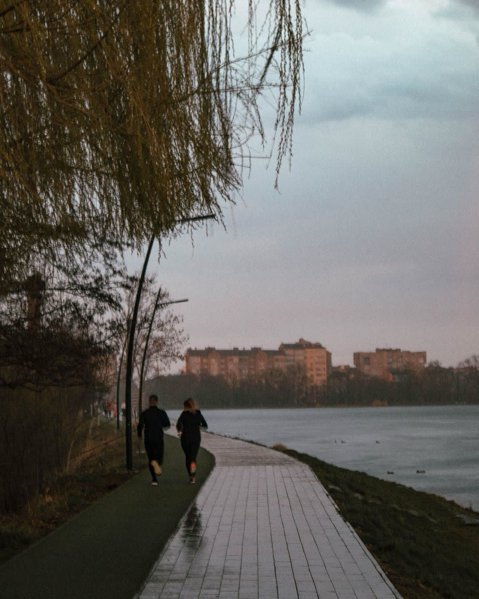

ריצה בחורף ובגשם: מה ללבוש, מתי לצאת ומתי לוותר

אחרי קיץ ישראלי ארוך, החורף הוא כנראה העונה הכי נוחה לרוץ בה. אין לחות של אוגוסט, אין שמש שצורבת כבר בשמונה בבוקר, והגוף סוף סוף לא נאבק בחום. מה שכן יש: בקרים קרים בהרים, ערבים שמחשיכים כבר בחמש, גשם שמגיע בדיוק כשקבעתם, וכמה ימים בשנה שבהם באמת עדיף להישאר בבית. הנה מה ללבוש לפי הטמפרטורה, איך רצים בגשם ובחושך, ואיך מזהים את הימים שבהם מוותרים בלי רגשות אשם.
כמה קר באמת בחורף בישראל?
פחות ממה שזה מרגיש בשש בבוקר מתחת לשמיכה. לפי נתוני השירות המטאורולוגי, אלה הממוצעים הרב-שנתיים (1991–2020) של ינואר, אחד החודשים הקרים בשנה, במעוגל:
- מישור החוף (בית דגן): כ-8 מעלות בלילה וכ-18 ביום.
- באר שבע: כ-7 בלילה וכ-17 ביום.
- ירושלים: כ-7 בלילה וכ-13 ביום.
- הר הנגב (שדה בוקר): כ-5 בלילה וכ-15 ביום.
- צפת: כ-5 בלילה וכ-10 ביום.
- רמת הגולן (מרום גולן): כ-2 בלילה וכ-10 ביום.
אלה ממוצעים, ובגלי קור יורד יותר. בין 19 ל-21 בינואר 2026, למשל, נמדדו בעמקים הצפוניים מינימום של מינוס מעלה עד שתי מעלות, ובמישור החוף 3 עד 5 מעלות. ובכל זאת, ברוב הארץ מדובר בטווח שהגוף דווקא אוהב. בהצהרת המומחים של הקולג׳ האמריקאי לרפואת ספורט (ACSM) על מאמץ בקור מצוטט ניסוי שבו רוכבים בחולצה ומכנסיים קצרים החזיקו הכי הרבה זמן במאמץ קבוע ב-11 מעלות, יותר מאשר ב-4 או ב-31 מעלות. מי שסבל כל הקיץ, ירגיש את זה כבר בריצה הראשונה של דצמבר.
וגם הגשם פחות נוכח ממה שנדמה. בינואר, באחד החודשים הגשומים בשנה, יש בממוצע כ-10 ימי גשם בבית דגן, 9 בירושלים ו-6 בבאר שבע (ימים עם מילימטר גשם ומעלה). כלומר, גם בלב החורף רוב הימים יבשים. ביום גשום, שווה להציץ במכ״ם הגשם ולחפש חלון.
מה ללבוש לריצה בחורף?
שכבות דקות, וקצת פחות ממה שנראה לכם נכון כשאתם עומדים בבית. ההצהרה של ה-ACSM מתארת את הלבוש הקלאסי לקור בשלוש שכבות:
- שכבה פנימית צמודה לעור, מבד שלא סופג זיעה אלא מעביר אותה החוצה.
- שכבה אמצעית שמבודדת וחוסמת את הקור.
- שכבה חיצונית שעוצרת רוח וגשם, ועדיין נותנת לאדים לצאת.
אבל ההצהרה גם ממליצה שלא ללבוש את השכבה החיצונית בזמן מאמץ, אלא אם יורד גשם או נושבת רוח חזקה, כי הזיעה מצטברת מתחתיה. בחורף הישראלי, רוב הריצות צריכות שכבה אחת או שתיים, לא שלוש. שלוש שכבות שמורות לבקרים הקרים בגולן, בגליל העליון ובהרי ירושלים.
הטעות הכי נפוצה: להתלבש לעמידה, לא לריצה
לפי ה-ACSM, הבעיה הנפוצה היא שאנשים מתחילים להתאמן בבגדים שמתאימים לעמידה במקום, ואחרי כמה דקות הם כבר לבושים יותר מדי. הזיעה נספגת, וכשהקצב יורד, כשעוצרים ברמזור או כשהרוח מתחזקת, הבגד הרטוב מתחיל לקרר.
מכאן כלל האצבע שרצים מעבירים זה לזה. אין מאחוריו מחקר מסודר, אבל הוא עובד לרוב האנשים: להתלבש כאילו חם בערך ב-5 מעלות יותר ממה שבחוץ. בפועל זה אומר לצאת מהבית קצת קר. אחרי עשר דקות, כשהגוף מתחמם, תשמחו שלא לקחתם את הסווטשירט.
עוד כמה כללים פשוטים
- לוותר על כותנה. חולצת כותנה סופגת זיעה ונשארת רטובה. בדים טכניים או צמר מרינו מתייבשים מהר יותר וממשיכים לחמם גם כשהם לחים.
- הקצוות קודם. אצבעות ואוזניים מתקררות ראשונות. כפפות דקות וסרט לאוזניים לא תופסים מקום, ואפשר לתחוב אותם לכיס כשמתחממים.
- שכבה עם רוכסן מאפשרת לפתוח באמצע הריצה במקום להוריד הכול.
- בקבוצה, כל אחד לפי הגוף שלו. ההצהרה של ה-ACSM ממליצה במפורש שכל אחד יתאים את הלבוש לתגובה שלו, ולא שכולם יתלבשו אותו דבר. יש מי שמזיע בעשר מעלות, ויש מי שקופא בחמש עשרה.
| בחוץ | פלג גוף עליון | רגליים ותוספות |
|---|---|---|
| 16+ | חולצה קצרה | מכנסיים קצרים. כמו באביב. |
| 11–16 | חולצה קצרה, או ארוכה ודקה בבוקר | מכנסיים קצרים. רוב הריצות בחורף במישור החוף נמצאות כאן. |
| 6–11 | חולצה טכנית ארוכה ודקה | טייץ ארוך או קצר, לפי מה שנוח. כפפות דקות למי שקר לו בידיים. |
| 1–6 | שכבה תרמית ארוכה, ומעליה שכבה דקה שעוצרת רוח | טייץ ארוך, כפפות, כובע או סרט שמכסה את האוזניים. |
| מתחת ל-1 | שכבה תרמית, שכבה מבודדת דקה ומעיל רוח | טייץ ארוך, כפפות חמות, כובע, וצוואר מבד שאפשר למשוך מעל הפה. |
| גשם או רוח | להוסיף מעיל רוח דק, עדיף דוחה מים ונושם | כובע מצחייה, גרביים טכניות, ובגדים יבשים מחכים בסוף. |
אפשר לרוץ בגשם?
כן. גשם כשלעצמו לא מסוכן, והרבה רצים מגלים שריצה בגשם קל נעימה הרבה יותר ממה שציפו. מה שצריך לנהל הוא השילוב של רטיבות ורוח. לפי ה-ACSM, עור רטוב מתקרר מהר יותר, ורוח מגבירה את איבוד החום ומקטינה את הבידוד של הבגדים. גשם של 14 מעלות בלי רוח הוא חוויה. גשם של 7 מעלות עם רוח חזקה בירושלים הוא כבר משהו שצריך להתכונן אליו.
- מעיל רוח דק שדוחה מים ומאפשר לזיעה לצאת. מעיל גשם כבד ואטום יהפוך לסאונה תוך עשר דקות.
- כובע מצחייה שומר את הטיפות מחוץ לעיניים, וזה ההבדל בין לראות את המדרכה ולא לראות אותה.
- גרביים טכניות ומשחה נגד שפשופים במקומות שמתחככים. בגד רטוב משפשף יותר.
- הטלפון בשקית אטומה או בכיס סגור.
- לולאות קצרות ליד הבית במקום מסלול אחד רחוק. אם הגשם מתחזק, מקצרים.
- בגדים יבשים מוכנים לסיום. הרבה מההתקררות קורה דווקא אחרי הריצה, כשהגוף מפסיק לייצר חום ואתם נשארים בבגדים רטובים. ה-ACSM ממליץ להחזיק בגדים יבשים להחלפה. בריצה קבוצתית, זה הרגע שבו כולם עומדים ומדברים ליד הרכב, אז מחליפים קודם ומדברים אחר כך.
נעליים ואחיזה על משטח רטוב
בחורף, רוב הנפילות בריצה לא קורות בגלל הגשם עצמו, אלא בגלל מה שהוא עושה למשטח. כמה מקומות שכדאי להכיר:
- פסי מעבר חציה צבועים ומכסי ביוב ממתכת, שהופכים חלקים מאוד כשהם רטובים.
- אבן חלקה ושיש בכניסות לבניינים ובכיכרות, דקים מעץ בטיילות, ושכבות של עלים רטובים.
- שלוליות שיכולות להסתיר בור או שפה של מדרכה.
- שבילי עפר שהופכים לבוץ. נעלי שטח עם סוליה מחורצת עוזרות, ולפעמים עדיף לחכות יום או יומיים שהשביל יתייבש.
בירידות ובפניות מקצרים צעד ומאטים. הקצב של היום פחות חשוב מהקרסול של מחר. ואם נקעתם בכל זאת, במדריך על כאב בריצה יש הסבר מתי אפשר להמשיך ומתי לעצור. את הנעליים הרטובות מייבשים עם נייר עיתון בפנים, לא על מפזר חום או תנור, שעלולים לפגוע בקצף ובדבק. על בחירת נעליים, כולל לשטח ולתנאים של ישראל, כתבנו במדריך לבחירת נעלי ריצה.
איך רצים בחושך בלי להיעלם מעיני הנהגים?
בחורף, הריצה של אחרי העבודה היא כמעט תמיד ריצה בחושך. בתחילת דצמבר השמש שוקעת בתל אביב ובירושלים בערך ב-16:40, וחצי שעה אחר כך כבר חשוך. גם הבוקר מתאחר: בינואר הזריחה רק בסביבות 06:40. כלומר, גם ריצת הבוקר המוקדמת מתחילה לפעמים בחושך.
מחקר מ-2005 בדק כמה טוב נהגים מזהים הולכי רגל בלילה, על מסלול נסיעה סגור. כשהולך הרגל היה בבגדים שחורים, הנהג נסע באורות נמוכים והיה סנוור מרכב ממול, הנהגים זיהו רק 5% מהם. כשהולכי הרגל לבשו פסים מחזירי אור על המפרקים, כך שרואים את התנועה של הגוף, הנהגים זיהו את כולם (בתנאים בלי סנוור). מחקר נוסף של אותה קבוצה מצא שפסים מחזירי אור על הקרסוליים והברכיים מוסיפים נראות גם מעבר לאפוד זוהר לבד.
מה שיוצא מזה בפועל:
- מחזירי אור על החלקים שזזים: קרסוליים, ברכיים, ואם אפשר גם מפרקי הידיים. נעליים וטייץ עם פסים מחזירי אור עושים את זה בלי לחשוב.
- פנס ראש או פנס קטן עוזר לנהגים לראות אתכם, ולכם לראות בורות ושלוליות.
- מסלולים מוארים: פארקים, טיילות ומדרכות רחבות. ריצה על שולי כביש בחושך היא ההימור הכי גרוע.
- אוזניות בעוצמה נמוכה, או אוזן אחת פתוחה, כדי לשמוע רכב שמתקרב.
- אל תניחו שראו אתכם. מול רכב שיוצא מחניה או פונה בצומת, מחכים לקשר עין או עוצרים.
חימום ושתייה: מה משתנה בקור?
למה בחורף צריך חימום ארוך יותר
כי שריר קר עובד פחות טוב. לפי ההצהרה של ה-ACSM, כל מעלה של ירידה בטמפרטורת השריר קשורה לירידה של 4% עד 6% בביצועי השריר, כמו כוח ועוצמה. בריצה קלה זה לא דרמטי, אבל לפני אימון מהיר או בבוקר של ארבע מעלות, מרגישים את ההבדל.
- מתחילים בבית. חמש דקות של תנועה דינמית לפני היציאה: הנפות רגליים, סקוואטים, ברכיים גבוהות, סיבובי ידיים. ככה יוצאים לקור כשהגוף כבר ער.
- הקילומטר הראשון איטי במכוון. לא מנסים להגיע לקצב לפני שהגוף התחמם. ממילא רוב הריצות צריכות להיות קלות.
- לפני אינטרוולים או טמפו: 10–15 דקות של ריצה קלה ועוד כמה האצות קצרות. החימום הזה עוזר גם למי שיש לו קוצר נשימה במאמץ, ראו בהמשך.
- בסוף, לא נעמדים בחוץ. אחרי ריצה בקור עדיף לעשות את המתיחות והשחרור בבית, בבגדים יבשים.
צריך לשתות גם בחורף?
כן, אם כי בדרך כלל פחות מאשר בקיץ. הבעיה היא שהקור משתיק את הצמא. בניסוי קטן שפורסם ב-2004, גברים שהלכו על הליכון ב-4 מעלות הרגישו צמא נמוך בעד 40% לעומת אותו מאמץ ב-27 מעלות, גם כשהגוף שלהם כבר היה מיובש. החוקרים משערים שהסיבה היא כיווץ של כלי הדם בעור: יותר דם נשאר במרכז הגוף, והמוח "חושב" שיש מספיק נוזלים. בינתיים אתם ממשיכים להזיע מתחת לשכבות.
ה-ACSM ממליץ גם בקור לעקוב אחרי השתייה לפי שינוי במשקל ולפי צבע השתן. בפועל: שותים כרגיל לאורך היום ועוד כוס לפני הריצה, שותים אחרי, ובריצה של יותר משעה לוקחים שתייה גם אם לא בא לכם, בלי להגזים. משקה חם אחרי הריצה עושה גם את העבודה וגם טוב לנשמה. את השיטה למדוד כמה אתם מזיעים בשעה פירטנו במדריך לריצה בחום, והיא עובדת גם בחורף.
מי צריך להיזהר יותר בקור?
אסתמה וקוצר נשימה במאמץ
אוויר קר ויבש הוא אחד הטריגרים המוכרים להיצרות זמנית של דרכי הנשימה במאמץ. לפי סקירה מ-2018, זה קורה לכ-5% עד 20% מהאוכלוסייה הכללית ועד 90% מהאנשים עם אסתמה. התסמינים: שיעול, צפצופים, לחץ בחזה או קוצר נשימה, שמופיעים לרוב כמה דקות אחרי המאמץ, מגיעים לשיא אחרי כעשר דקות ונעלמים תוך כשעה. הרבה אנשים מפרשים את זה בטעות כ"חוסר כושר".
הסקירה מזכירה שני צעדים בלי תרופות: חימום של 10–15 דקות במאמץ בינוני ומעלה לפני האימון, שאחריו יש פרק זמן שבו התסמינים פוחתים, וחימום ולחלוח של האוויר הנשאף, למשל בנשימה דרך צוואר מבד או צעיף מעל הפה. מי שמשתמש במשאף, כדאי שישאל את הרופא מתי לקחת אותו לפני ריצה. ומי שמרגיש את זה בפעם הראשונה, כדאי שייבדק. עוד על נשימה נכונה בזמן ריצה יש במדריך על נשימה בריצה.
תופעת ריינו: אצבעות לבנות בקור
בתופעת ריינו, לפי שירות הבריאות הבריטי (NHS), הדם מפסיק לזרום כמו שצריך לאצבעות הידיים והרגליים, והן מחווירות, מכחילות או מאדימות, לפעמים עם כאב, נימול או עקצוץ. זה נפוץ ובדרך כלל לא מסוכן, והקור הוא אחד הטריגרים העיקריים. מה עוזר: כפפות חמות, גרביים חמות, ולהימנע ממעברים חדים בין חום לקור. הסיבה לפנות לרופא: כשהתסמינים חמורים או מחמירים, כשהם רק בצד אחד של הגוף, כשיש איתם כאבי מפרקים או פריחה, או כשהם מופיעים לראשונה אחרי גיל 30.
לב וכלי דם
לפי איגוד הלב האמריקאי, חשיפה לאוויר קר מכווצת את כלי הדם, מעלה את לחץ הדם ומצרה גם את העורקים הכליליים שמזינים את הלב. מי שיש לו מחלת לב או גורמי סיכון, כדאי שידבר עם הרופא לפני ריצות בבקרים קרים, ויקפיד על חימום ארוך והתחלה איטית. כאב, לחץ או מועקה בחזה: עוצרים מיד ומתקשרים למד״א, 101. סחרחורת או דפיקות לב לא סדירות: עוצרים, ואם זה לא חולף תוך זמן קצר, מתקשרים למד״א, 101.
מתי לא לצאת לרוץ בחורף?
כשיש ברקים, כשיש סכנת שיטפון במסלול, וכשיש אזהרה מרוחות חזקות. בכל שאר הימים, כמעט תמיד אפשר להתלבש נכון ולצאת.
ברקים
מחקר על פיזור הברקים בישראל מצא שרוב הפעילות מתרכזת בין אוקטובר לאפריל, והריכוז הגבוה ביותר הוא מעל הים ולאורך מישור החוף. כלומר, בדיוק בטיילות שבהן רצים הרבה מאוד אנשים. ההנחיות של שירות מזג האוויר האמריקאי (NWS) ברורות: אם שומעים רעם, כנראה שאתם כבר בטווח הפגיעה. אין מקום בטוח בחוץ בזמן סופת ברקים. הסכנה מגיעה בדרך כלל עד כ-10 עד 16 ק״מ מבסיס הענן, ואחרי הרעם האחרון מחכים לפחות 30 דקות לפני שחוזרים לפעילות בחוץ.
שיטפונות
שיטפון הוא לא רק עניין של נחלי מדבר. גשם שיורד במעלה נחל, לפעמים רחוק מאוד מכם, יכול להביא גל מים לאפיק שהיה יבש לגמרי, בזמן שמעליכם עוד אין גשם. ובעיר, מעברים תחתיים וכבישים נמוכים מוצפים תוך דקות. לפי שירות מזג האוויר האמריקאי, כ-15 סנטימטרים של מים זורמים מספיקים כדי להפיל אדם מבוגר. רשות הטבע והגנים מדגישה שחל איסור מוחלט להיכנס ברגל או ברכב לאפיקי נחלים בזרימה עד שהמפלס יורד לגמרי, ושאסור להתקרב לשפת נחל בזמן שיטפון בגלל סכנה שהגדה תקרוס. כבאות והצלה מוסיפים: לא לחצות כבישים מוצפים.
הימים שבהם מוותרים, או משנים מסלול:
- שומעים רעם או רואים ברק: מפסיקים ונכנסים לבניין או לרכב סגור. לא מחכים מתחת לעץ בודד, לא נשארים על גבעה או בשטח פתוח. מחכים 30 דקות אחרי הרעם האחרון.
- אזהרת שיטפונות: לא רצים באפיקי נחלים, בוואדיות ובשבילים לאורך ערוצים, גם אם אצלכם השמיים בהירים. מים זורמים בכביש או בנחל: לא חוצים, גם לא ברגל. מעבר תחתי מוצף: מסתובבים. לפני ריצת שטח, בודקים במוקד המידע של רשות הטבע והגנים, 3639*.
- אזהרה מרוחות חזקות: ענפים ועצים נופלים. מעדיפים הליכון, או לפחות מסלול פתוח בלי עצים גבוהים.
- סימנים של התקררות יתר: רעד חזק, ידיים וכפות רגליים קפואות, תנועות מסורבלות. סימן מסוכן במיוחד: כשהרעד נחלש ומישהו נהיה אדיש, מדבר לא ברור או מגושם. מכניסים למקום חם ויבש, מחליפים בגדים רטובים, ופונים לעזרה רפואית.
התקררות כזו נדירה אצל רצים בישראל, אבל היא אפשרית: ריצה ארוכה בגשם וברוח בהרים, או נקע שמשאיר מישהו עומד רטוב בשטח. לפי ה-ACSM, באוויר קר הסיכון הכי גבוה כשמישהו נפצע או מותש ולא יכול להמשיך לזוז, ולכן בתנאים כאלה עדיף לרוץ עם עוד מישהו.
איך לא לוותר על ריצה בבוקר גשום?
הקור הוא לא הבעיה האמיתית של החורף. הבעיה היא השמיכה. כמה דברים שמקטינים את הסיכוי שתישארו בה:
- להכין הכול מהערב. בגדים על הכיסא, נעליים ליד הדלת, פנס טעון. כל החלטה שלא צריך לקבל בשש בבוקר היא סיבה פחות לוותר.
- להסתכל במכ״ם, לא רק בתחזית. "גשם לאורך היום" בתחזית נראה במכ״ם לפעמים כמו שלוש מקלחות קצרות עם הפסקות.
- לקבוע עם מישהו. הכי קל לוותר על ריצה שקבעתם רק עם עצמכם. על ריצה שמישהו מחכה לכם בה בשש וחצי ליד הפארק, הרבה יותר קשה. כתבנו על מה המחקר אומר על ריצה עם אחרים, ועל איך מוצאים קבוצת ריצה שמתאימה לכם.
- להוריד את הרף. ביום סוער במיוחד, גם עשרים דקות נחשבות. הרצף חשוב יותר מהמרחק.
- הליכון ואימון כוח הם לא כישלון. ביום של ברקים או אזהרת שיטפונות, הליכון או אימון כוח של עשרים דקות שומרים על ההרגל בלי סיכון.
בבוקר גשום, ריצה משותפת מנצחת את השמיכה. כשיש שעה קבועה ומישהו שמחכה, הרבה יותר קשה להישאר במיטה. בבוא נרוץ רואים ריצות קבוצתיות קרובות לבית, עם נקודת מפגש, שעה, מרחק וטווח קצב, ומצטרפים לזו שמתאימה לכם. ואם אין כזו, אפשר לפתוח ריצה משלכם.
שאלות נפוצות
מה ללבוש לריצה בחורף?
שכבות דקות מבד טכני שלא סופג זיעה, וקצת פחות ממה שנראה לכם בבית. כלל אצבע נפוץ: להתלבש כאילו חם בערך ב-5 מעלות יותר ממה שבחוץ. בחורף הישראלי רוב הריצות צריכות שכבה אחת או שתיים, ועוד כפפות דקות וכיסוי לאוזניים בבקרים הקרים.
זה בסדר לרוץ בגשם?
כן. גשם לא מסוכן כשלעצמו. מה שמקרר הוא השילוב של בגדים רטובים ורוח, ולכן כדאי מעיל רוח דק, גרביים שלא מכותנה, ובגדים יבשים להחליף מיד בסיום. בגשם עם ברקים, או כשיש סכנת שיטפון במסלול, לא יוצאים.
צריך לשתות בריצה בחורף?
כן, גם אם לא מרגישים צמא. בניסוי שבו אנשים הלכו על הליכון ב-4 מעלות, הצמא היה נמוך בעד 40% לעומת אותו מאמץ ב-27 מעלות, גם כשהגוף כבר היה מיובש. שותים לפני ואחרי, ובריצה של יותר משעה לוקחים שתייה.
ריצה בקור מזיקה לריאות?
לרוב האנשים לא. אבל אוויר קר ויבש יכול לגרום להיצרות זמנית של דרכי הנשימה במאמץ, בעיקר אצל אנשים עם אסתמה. חימום של 10 עד 15 דקות ונשימה דרך צוואר מבד או צעיף מעל הפה עוזרים. מי שמשתמש במשאף, כדאי שישאל את הרופא מתי לקחת אותו לפני ריצה.
מתי לא לצאת לרוץ בחורף?
כששומעים רעמים או רואים ברקים, כשיש אזהרת שיטפונות והמסלול עובר באפיק נחל או במעבר תחתי, וכשיש אזהרה מרוחות חזקות. אחרי הרעם האחרון מחכים 30 דקות לפני שחוזרים לרוץ בחוץ.
ריצה על הליכון בחורף נחשבת?
לגמרי. ביום של סערה, ברקים או אזהרת שיטפונות, הליכון או אימון כוח בבית שומרים על הרצף בלי סיכון. העיקר הוא להמשיך לזוז לאורך החורף, לא לרוץ דווקא בחוץ.
מקורות
- Castellani J.W., Eglin C.M., Ikäheimo T.M., Montgomery H., Paal P., Tipton M.J. (2021). ACSM expert consensus statement: Injury prevention and exercise performance during cold-weather exercise. Current Sports Medicine Reports, 20(11).
- השירות המטאורולוגי הישראלי. Monthly weather conditions, January 2026 (כולל השוואה לממוצעים הרב-שנתיים 1991–2020).
- Kenefick R.W., Hazzard M.P., Mahood N.V., Castellani J.W. (2004). Thirst sensations and AVP responses at rest and during exercise-cold exposure. Medicine & Science in Sports & Exercise, 36(9).
- Aggarwal B., Mulgirigama A., Berend N. (2018). Exercise-induced bronchoconstriction: prevalence, pathophysiology, patient impact, diagnosis and management. npj Primary Care Respiratory Medicine, 28.
- Wood J.M., Tyrrell R.A., Carberry T.P. (2005). Limitations in drivers' ability to recognize pedestrians at night. Human Factors, 47(3).
- Wood J.M. et al. (2011). Using biological motion to enhance the conspicuity of roadway workers. Accident Analysis & Prevention, 43(3).
- Shalev S., Saaroni H., Izsak T., Yair Y., Ziv B. (2011). The spatio-temporal distribution of lightning over Israel and the neighboring area. Natural Hazards and Earth System Sciences, 11.
- National Weather Service. Lightning safety and outdoor sports activities; Lightning safety outdoors; Turn Around Don't Drown.
- כיפה (2023). שבוע סוער לפנינו: ההנחיות של כבאות והצלה לקראת ההצפות והשיטפונות (כולל הנחיות רשות הטבע והגנים).
- NHS. Raynaud's.
- American Heart Association (2025). A snowstorm's a-brewing: be careful out there to stay heart-healthy.
המידע בכתבה הוא כללי ואינו תחליף לייעוץ רפואי. במקרה חירום מתקשרים מיד למד״א, 101.